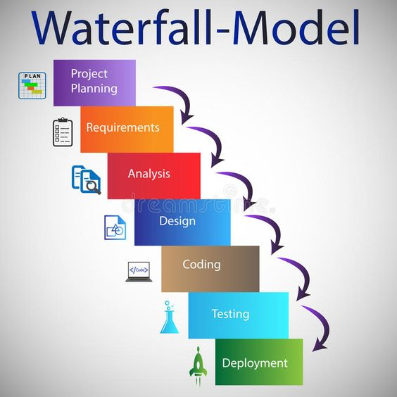

Waterfall
Identify a clear statement of objective for each stage.

Requirements:
In this phase, all customer requirements are gathered and documented.
It is assumed that all requirements can be gathered at this stage,
and there will be no further customer correspondence until the product is complete.
Design:
The design phase is broken up into two sub-phases: logical design and physical design.
In the logical design sub-phase, possible solutions are brainstormed and theorized.
In the physical design sub-phase, those theoretical ideas are made into concrete specifications.
Implementation:
In this phase, programmers assimilate the requirements and specifications from the previous phases
and produce actual code.
Verification:
This phase involves the customer reviewing the product to ensure that it meets the requirements
laid out at the beginning of the project. This is done by releasing the completed product to the customer.
Maintenance:
During the maintenance phase, the customer uses the product regularly and discovers bugs, inadequate features,
and other errors that occurred during production. The production team applies these fixes as necessary until the
customer is satisfied.
Define testable, objective, success and failure criteria for each stage.
Requirements:
- The requirements documentation should be complete, it should clearly outline what the system is expected to do.
- Gather all necessary information from stakeholders and document it accurately.
- All stakeholders agree upon the documented requirements, and there are no major discrepancies.
- Incomplete requirements, conflicting requirements from stakeholders, or a lack of consensus on the documented requirements.
Design:
- The system design documents should provide a clear architecture, interface definitions.
- To translate the requirements into a blueprint for the system's structure.
- The design meets all specified requirements, technical constraints, and maintenance.
- Inadequate design documentation, design not aligned with requirements, or technical feasibility issues.
Implementation:
- The implemented code should adhere to coding standards, be well-documented, and pass unit tests.
- All components are implemented correctly, meet performance requirements.
- Code does not meet design specifications, fails unit tests, or introduces new defects into the system.
Verification:
- The objective of verification is to confirm that the product of each development stage meets the specified criteria and standards.
- discrepancies, errors from outcomes and requirements.
- Verification is successful when all verification activities have been completed according requirements.
- Critical defects found during testing that prevent the software from meeting its requirements.
- Failure to adhere to established verification standards.
Maintenance:
- The objective of the Maintenance stage is to address issues.
- It aims to ensure the ongoing reliability, availability, and performance of the software.
- Maintenance tasks are completed within the specified timeframes and budget.
- User satisfaction levels remain high or improve as a result of maintenance activities.
- Maintenance tasks are delayed or not completed due to technical challenges, or other factors.
- Defects resolution or regression issues.
- User feedback or performance metrics indicate a decline in satisfaction or system performance following maintenance activities.
Break down stages as needed into smaller stages/objectives and document those.
Requirements:
- Identify all stakeholders involved in the project,including end-users, clients.
- Analyze gathered requirements to identify priorities. Prioritize requirements on importance to stakeholders.
Design:
- Break down the high-level design into detailed specifications for each component data structures and algorithms.
- Build prototypes to validate design concepts and gather feedback from stakeholders.
- walkthroughs of the design documentation to identify potential issues or improvements before improvements.
Implementation:
- Allocate necessary resources such as tools, and libraries required for coding.
- Break down the implementation tasks into smaller stages, assigning them to development team members based on their experience.
- Ensure that all code is written following the coding standards.
- Track revisions, and facilitate collaboration among developers.
Verification:
- Verify that all planned verification activities have been completed.
- Document the results of verification activities, including test cases, test results, and any identified defects or improvements
Maintenance:
- Monitor the deployed software for issues, defects, and performance problems.
- Investigate reported issues.
- Ensuring that changes are properly tested and deployed.